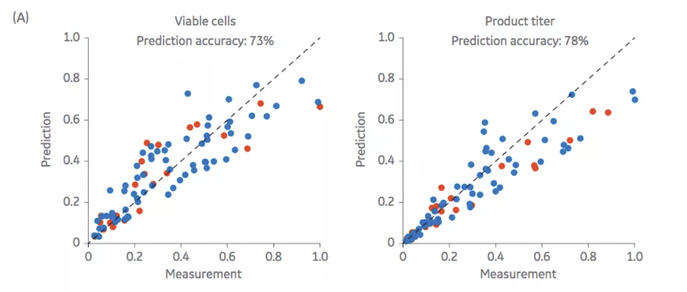

Digital-twins for biomanufacturing
The development of new biopharmaceuticals is still quite an inefficient, expensive pocess with a high-failure rate. A new approach is enabling the shift from black box models to tightly constrained parameters. Digital-twinning is being built to bridge the gap between technology and manufacturing.
A digital-twin is a model that uses real time from machines, as well as past data from different sources to monitor and optimize the biomanufacturing process. This market is growing at a CAGR of 60% annually. The value proposition is immense, as simulating manufacturing processes saves resources, time and decreases expenses.
The following are two diagrams represneting the efficacy of predicitve modelling. (A) is a metabolic network model for a CHO cell that simulated the production of an antibody. The training data set (blue dots) and validation data set (red dots) shows a 73% accuracy for cell density and 78% for product titer.

Difference between a simulation and an experiment
Modelling and physical experiments run in parallel, in some ways. They both start with system geometry, the physical extent of the system, and the key properties of the components (viscosity, density, reaction rates etc.).
In an experiment, we begin with the universe and try to isolate the variables that do not matter, in order to find corrolations. In a biological experiment, the goal is to isolate the physical and biological properties that influence the reaction, versus those that do not.
In comparison, a simulation starts with nothing, no universe. We add physics (gemoetry, physical properties, equations, other data) until we can accurately generate a model which can reproduce the physical world better than or more efficiently than a lab.